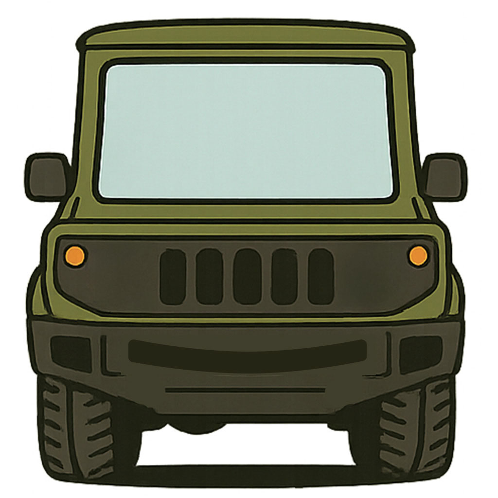

<!doctype html>
<html lang="ja">
<meta charset="utf-8">
<meta name="viewport" content="width=device-width,initial-scale=1">
  <!-- 既存のCSS -->
  <link rel="stylesheet" href="./css/common.css">
  <link rel="stylesheet" href="./css/style.css">
  <!-- 追加：PWA用 -->
  <link rel="manifest" href="./manifest.json">
  <meta name="theme-color" content="#202b42">
<title>SayWorks Recorder</title>
<body>
<script>
/* ===================== ヘルパー ===================== */

// プリフライト：止めない版（ミュート疑いはフラグだけ立てて進む）
async function preflight() {
  // ★ mediaDevices / enumerateDevices がなければ何もしないで終了
  if (!navigator.mediaDevices || !navigator.mediaDevices.enumerateDevices) {
    return;
  }
  try {
    const st = await navigator.permissions.query({ name: "microphone" });
    if (st.state === "denied") throw new Error("microphone denied");
  } catch (_) {}

  const devs = await navigator.mediaDevices.enumerateDevices();
  if (!devs.some(d => d.kind === "audioinput")) {
    throw new Error("no audio input device");
  }

  const tmpStream = await navigator.mediaDevices.getUserMedia({
    audio: { echoCancellation: true, noiseSuppression: false }, video: false
  });
  const AC = window.AudioContext || window.webkitAudioContext;
  const ctx = new AC();
  if (ctx.state === 'suspended') { try { await ctx.resume(); } catch(_){} }
  const src = ctx.createMediaStreamSource(tmpStream);
  const an  = ctx.createAnalyser(); an.fftSize = 2048; src.connect(an);
  const buf = new Uint8Array(an.frequencyBinCount);
  let activeFrames = 0;
  for (let i = 0; i < 10; i++) {
    an.getByteTimeDomainData(buf);
    if (buf.some(v => v !== 128)) activeFrames++;
    await new Promise(r => setTimeout(r, 100));
  }
  tmpStream.getTracks().forEach(t => t.stop());
  ctx.close();
  // 止めずに情報だけ残す
  window.__inputLikelySilent = (activeFrames < 2);
}

// ヘルスモニタ：無音は内部カウントのみ（UIは静か）
function makeHealthMonitor(stream, { silenceSec = 3, onSilence, onRecover } = {}) {
  const AC = window.AudioContext || window.webkitAudioContext;
  const ctx = new AC();
  const src = ctx.createMediaStreamSource(stream);
  const an  = ctx.createAnalyser(); an.fftSize = 2048; src.connect(an);
  const buf = new Uint8Array(an.frequencyBinCount);
  let zeroCount = 0, lastSilent = false;
  const thresh = Math.max(1, Math.floor((silenceSec * 1000) / 200));
  const timer = setInterval(() => {
    an.getByteTimeDomainData(buf);
    const active = buf.some(v => v !== 128);
    if (!active) zeroCount++; else zeroCount = 0;
    const silentNow = zeroCount >= thresh;
    if (silentNow && !lastSilent) { onSilence?.(); lastSilent = true; }
    if (!silentNow && lastSilent) { onRecover?.(); lastSilent = false; }
  }, 200);
  return () => { clearInterval(timer); try { ctx.close(); } catch {} };
}

// 画面スリープ防止（対応端末）
let wakeLock;
async function holdWakeLock(){ try{ wakeLock = await navigator.wakeLock.request('screen'); }catch(_){} }
document.addEventListener('visibilitychange', () => {
  if (document.visibilityState === 'visible' && wakeLock?.released) holdWakeLock();
});

// 便利ショート
const $ = s => document.querySelector(s);
const log = (...a)=>{ (document.querySelector('#log')||{}).textContent += a.join(' ')+'\n' };

/* ===================== 録音設定 ===================== */
// テスト値：本番は ROLL_MS=900000, CHUNK_MS=10000〜15000 に変更するだけ
const CHUNK_MS = 5000;     // チャンク間隔
const ROLL_MS  = 60000;    // ロール切替（1分）

function makeSessionId(){
  const ts = new Date().toISOString().replace(/[-:.TZ]/g,'').slice(0,14);
  const r  = Math.random().toString(36).slice(2,6);
  return `${ts}-${r}`;
}
function pickMime(){
  const cand = ['audio/webm;codecs=opus','audio/webm','audio/ogg;codecs=opus','audio/ogg'];
  for(const m of cand){ if (window.MediaRecorder && MediaRecorder.isTypeSupported(m)) return m; }
  return ''; // UA任せ
}
function extFromMime(m){ return m?.includes('ogg') ? 'ogg' : 'webm'; }

/* ===================== 状態変数 ===================== */
let rec, stream, mime=pickMime(), ext=extFromMime(mime);
let sessionId, roll=0, seq=0, rollTimer=null, startTime=0, elapsedTimer=null;
let chunkTimer = null;
let stopMonitor = null;
let chunksAll = [];      // 最終マージ用
let silentEvents = 0;    // 無音イベント（HealthMonitor）
let silentChunks = 0;    // 0バイトチャンク数（ondataavailable）

/* ===================== サーバ送信 ===================== */
async function postChunk(blob){
  const url = `/api/upload?sessionId=${encodeURIComponent(sessionId)}&roll=${roll}&seq=${seq}&ext=${ext}`;
  const buf = await blob.arrayBuffer();
  const res = await fetch(url, {
    method:'POST',
    headers: { 'Content-Type':'application/octet-stream', 'X-Filename': `rec_${sessionId}_r${roll}_s${seq}.${ext}` },
    body: buf
  });
  const j = await res.json().catch(()=>({ok:false}));
  if(!j.ok) throw new Error('upload failed');
}

function startRollTimer(){
  clearTimeout(rollTimer);
  rollTimer = setTimeout(()=>{ roll++; seq=0; log(`[roll] → ${roll}`); startRollTimer(); }, ROLL_MS);
}
function startElapsedTicker(){
  clearInterval(elapsedTimer);
  elapsedTimer = setInterval(()=>{
    const sec = Math.floor((Date.now()-startTime)/1000);
    const mm = String(Math.floor(sec/60)).padStart(2,'0');
    const ss = String(sec%60).padStart(2,'0');
    const el = $('#elapsed'); if(el) el.textContent = `${mm}:${ss}`;
  }, 200);
}

/* ===================== UI組み立て ===================== */
document.addEventListener('DOMContentLoaded', () => {
  const ui = document.createElement('div');
  ui.innerHTML = `
<div class="car-wrap" id="carWrap">
  <div id="dia">
  
          <div class="eyes">
            <div class="eye" id="eyeL"></div>
            <div class="eye" id="eyeR"></div>
          </div>
  </div>
  <!-- 窓 = 録音開始/再開 -->
  <button id="hs-window" class="hs" aria-label="start/resume"></button>
  <!-- タイヤ = 停止/保存（どっちを押してもOK） -->
  <button id="hs-tire-l" class="hs" aria-label="stop/save"></button>
  <button id="hs-tire-r" class="hs" aria-label="stop/save"></button>
</div>

  <div>
      <button id="startBtn">Start</button>
      <button id="stopBtn" disabled>Stop</button>
      <div id="hud">
        <div id="recDot"></div>
        <div id="elapsed">00:00</div>
        <div id="counters"></div>
      </div>
      <audio id="player" controls></audio>
      <div id="log"></div>
    </div>`;
  document.body.prepend(ui);

  const recDot = $('#recDot');
  const counters = $('#counters');
  const player = $('#player');
  const updateCounters = () => { counters.textContent = `session=${sessionId || '-'} | roll=${roll} seq=${seq}`; };

  /* ------------ Start ------------ */
  $('#startBtn').onclick = async () => {
    try {
      $('#startBtn').disabled = true;

      // ★ ここから追加（unsafe環境ガード）--------------------
      if (!navigator.mediaDevices || !navigator.mediaDevices.getUserMedia) {
        log(
          'この環境ではマイク録音がサポートされていません。\n' +
          '・https 接続、または localhost からアクセスしてください。\n' +
          '・iPad なら https のURLで開くと録音できるようになります。'
        );
        $('#startBtn').disabled = false;
        return;
      }
      // ★ 追加ここまで --------------------------------------

      // プリフライト（止めない）
      await preflight();
      if (window.__inputLikelySilent) log('ℹ️ 入力レベルが低い可能性（ミュート/静音）。録音は続行します。');

      // 初期化
      silentEvents = 0; silentChunks = 0; chunksAll = [];
      sessionId = makeSessionId(); roll = 0; seq = 0; updateCounters();

      // 入力取得
      stream = await navigator.mediaDevices.getUserMedia({
        audio: { echoCancellation: true, noiseSuppression: false }, video: false
      });

      // ヘルスモニタ（内部カウントのみ）
      stopMonitor = makeHealthMonitor(stream, {
        silenceSec: 3,
        onSilence() { silentEvents++; },
        onRecover() {}
      });

      holdWakeLock().catch(()=>{});

      // レコーダ開始（timesliceなし＋定期requestData）
      rec = new MediaRecorder(stream, mime ? { mimeType:mime } : undefined);
      startTime = Date.now(); startElapsedTicker(); startRollTimer();
      recDot.classList.add('active');

      rec.ondataavailable = async (e) => {
        if(!(e.data && e.data.size)) { silentChunks++; return; }

        // ローカル蓄積（最終マージ用）
        chunksAll.push(e.data.slice(0));

        // 5秒ごとのチャンクを即時アップ
        const blob = new Blob([e.data], { type: mime || 'audio/webm' });
        try {
          await postChunk(blob);
          seq++; updateCounters();
        } catch(_){ /* 表示しない */ }
      };
      rec.onerror = e => log('rec.onerror', e.error?.message || e.message || e);
      rec.onstop = () => {
        clearInterval(chunkTimer);
        recDot.classList.remove('active');
      };

      rec.start(); // timesliceなし
      chunkTimer = setInterval(() => {
        if (rec && rec.state === 'recording') rec.requestData();
      }, CHUNK_MS);

      $('#stopBtn').disabled = false;
      log(`REC start: mime=${mime||'(UA)'} ext=${ext} chunk=${CHUNK_MS}ms roll=${ROLL_MS}ms`);
    } catch(err){
      $('#startBtn').disabled = false;
      log('getUserMedia error:', err.message || err);
    }
  };

  /* ------------ Stop ------------ */
  $('#stopBtn').onclick = async () => {
    try{
      clearTimeout(rollTimer); clearInterval(elapsedTimer);

      if (rec && rec.state !== 'inactive') rec.stop();
      stream?.getTracks()?.forEach(t => t.stop());
      $('#stopBtn').disabled = true; $('#startBtn').disabled = false;

      let finalBlob = null;

      // 全チャンクをマージ
      if (chunksAll.length) {
        finalBlob = new Blob(chunksAll, { type: mime || 'audio/webm' });

        // 再生チェック
        const url = URL.createObjectURL(finalBlob);
        player.src = url; player.load();
        await new Promise(r => { player.onloadedmetadata = r; setTimeout(r, 500); });
        log('final duration ≈', player.duration, 'sec , size=', finalBlob.size);

        // 最終ファイルアップロード
        const fn = `final_${sessionId}.${ext}`;
        const res = await fetch(`/api/final?sessionId=${encodeURIComponent(sessionId)}&ext=${ext}`, {
          method: 'POST',
          headers: { 'Content-Type': 'application/octet-stream', 'X-Filename': fn },
          body: await finalBlob.arrayBuffer()
        });
        const j = await res.json().catch(()=>({ok:false}));
        log('final upload:', JSON.stringify(j));
      }

      // 一言判定（±3s以内でOK）
// 一言判定（±3s以内でOK）
// 一言判定（±3s以内でOK）: expectedは“実測経過秒”、Infinity/NaNは0扱い
if (finalBlob) {
  const expectedSec = Math.max(0, Math.round((Date.now() - startTime) / 1000));
  const url2 = URL.createObjectURL(finalBlob);
  const player2 = $('#player');
  player2.src = url2;
  await new Promise(r => { player2.onloadedmetadata = r; setTimeout(r, 1000); });
  let d = player2.duration;
  if (!Number.isFinite(d) || Number.isNaN(d)) d = 0; // Infinity/NaNは未確定→0扱い
  const actualSec = Math.round(d);
  const ok = (actualSec === 0) || Math.abs(actualSec - expectedSec) <= 3;
  log(ok ? '✅ 録音成功' : `⚠️ 録音に不具合の可能性（expected=${expectedSec}s actual=${actualSec}s）`);
  try { URL.revokeObjectURL(url2); } catch {}
} else {
  log('⚠️ 最終ファイルが生成されていません（録音時間が極端に短い/無音の可能性）');
}
      // 管理向けの品質メモ（任意）
      const q = new URLSearchParams({
        sessionId,
        roll: String(roll),
        seq: String(seq),
        expectedSec: String(Math.floor((roll * ROLL_MS + seq * CHUNK_MS) / 1000)),
        actualSec: String(Math.round($('#player').duration || 0)),
        silentEvents: String(silentEvents),
        silentChunks: String(silentChunks)
      }).toString();
      fetch(`/api/commit?${q}`).catch(()=>{});

      // 片付け
      chunksAll = [];
    }catch(err){
      log('stop error:', err.message || err);
    }
    // ヘルスモニタ停止
    try { stopMonitor?.(); } catch {}
    stopMonitor = null;
  };
// ホットスポット -> 既存ボタンを代理クリック
const carWrap = document.getElementById('carWrap');
const startBtn = document.getElementById('startBtn');
const stopBtn  = document.getElementById('stopBtn');

// 「窓」= Start/Resume
document.getElementById('hs-window').addEventListener('click', ()=>{
  if (startBtn.disabled) return;         // 無効時は無視
  startBtn.click();
});

// 「タイヤ」= Stop/Save（長押し2秒セーフティ）
function bindLongPressStop(el){
  let t=null, pressed=false;
  const holdMs = 2000;
  const start = ()=>{ pressed=true; t=setTimeout(()=>{ if(pressed && !stopBtn.disabled){ stopBtn.click(); } }, holdMs); };
  const end   = ()=>{ pressed=false; clearTimeout(t); };
  el.addEventListener('pointerdown', start);
  el.addEventListener('pointerup', end);
  el.addEventListener('pointerleave', end);
  el.addEventListener('pointercancel', end);
}
bindLongPressStop(document.getElementById('hs-tire-l'));
bindLongPressStop(document.getElementById('hs-tire-r'));

// 録音状態でDIAを揺らす（class付け外し）
const setCarSwing = (on)=> carWrap.classList.toggle('recording', !!on);

// 👁️ まばたき制御
const eyeL = document.getElementById('eyeL');
const eyeR = document.getElementById('eyeR');
let blinkTimer = null;

function startBlinking() {
  clearInterval(blinkTimer);
  const blink = () => {
    // 左右同時にパチッと
    [eyeL, eyeR].forEach(e => {
      e.classList.add('blinking');
      setTimeout(() => e.classList.remove('blinking'), 400);
    });
  };
  blinkTimer = setInterval(() => {
    const r = Math.random();
    if (r < 0.2) blink(); // 20%の確率で瞬き
  }, 2000); // 2秒おきチェック
}

function stopBlinking() {
  clearInterval(blinkTimer);
  blinkTimer = null;
}


// 既存の Start/Stop 成功タイミングにフック
const _startOnclick = startBtn.onclick;
startBtn.onclick = async (...args)=>{
  const r = await _startOnclick?.apply(startBtn,args);
  setCarSwing(true);
  startBlinking();
  return r;
};
const _stopOnclick = stopBtn.onclick;
stopBtn.onclick = async (...args)=>{
  setCarSwing(false);
  stopBlinking();
  return await _stopOnclick?.apply(stopBtn,args);
};


});

  // ----- いちばん最後にこれを足す -----
  if ('serviceWorker' in navigator) {
    window.addEventListener('load', () => {
      navigator.serviceWorker.register('./sw.js').catch(console.error);
    });
  }

</script>
</body>
</html>
